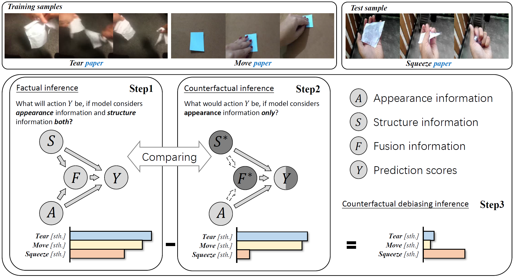

SUN, Pengzhan 孙鹏展
 |
SUN, Pengzhan |
About Me
I'm a senior undergraduate studying Mathematics-Physics Fundamental Science (Artificial Intelligence Specialization) at University of Electronic Science and Technology of China (UESTC). In particular, I'm a member of Yingcai Honors College of UESTC.
I'm a member of Data Intelligence Group, UESTC, supervised by Prof. Wen Li and Prof. Lixin Duan. Besides, I currently receive remote guidance from Prof. Hanwang Zhang in MReaL Lab, NTU.
I'm currently working on 1) causal inference and 2) self-supervised learning, especially for image and video classification.
News
- I'm very glad to be recognized and become the youngest mentor of DIG, responsible for guiding fresh members.
- Received remote guidance from Prof. Hanwang Zhang in MReaL Lab, Nanyang Technological University.
- My first paper was accepted by the 29th ACM International Conference on Multimedia (ACM MM 2021) (First Author).
- Received remote guidance from Principal Research Staff Chuang Gan and Postdoctoral Researcher Bo Wu in MIT-IBM Waston AI Lab.
- Became a member of Data Intelligence Group, University of Electronic and Scientific Technology of China, supervised by Prof. Lixin Duan and Prof. Wen Li.
Publications
|  |
Counterfactual Debiasing Inference for Compositional Action Recognition. |
Teaching
- Spring 2021: Introduction to Artificial Intelligence, UESTC, Teaching Assistant
Awards
- Academic Model Scholarship 2020
- First-class Outstanding Student Scholarship 2019 (2/23)